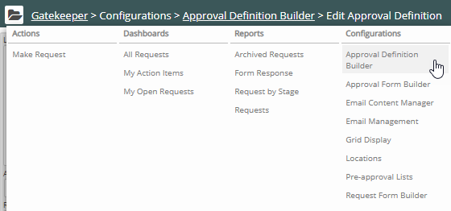
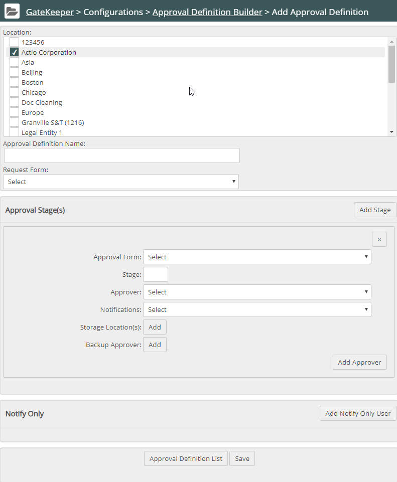
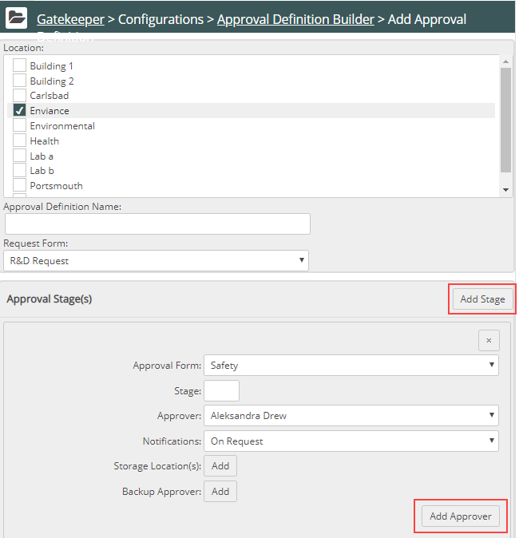

Click Gatekeeper Main Menu ( ). The Gatekeeper navigation pane displays. Select Approval Definition Builder from the Configurations list.
). The Gatekeeper navigation pane displays. Select Approval Definition Builder from the Configurations list.

The Approval Definition List displays.

Click the Add Definition button.
The Approval Definition Builder page displays.

Select the Request Form this definition will use from the dropdown list.
Then select the Approval Form that will display to approvers.
Both the request and approval forms must be active to be available in the lists. If a form you created is not listed, go to the request or approval form list and ensure the form is active.
Enter a Stage number. Click the Add Stage button to add another Stage.
Choose the Notifications.
This field specifies when to notify the selected Approver. Options are: Always, Never, On Request, On Final Approval, On Previous Approval, On Decline
To additional Notifications to other approvers, click the + button to the right. Another set of fields (for Approver, Notifications, Storage Location(s) and Backup Approver) will appear below, which will apply to the same approval form and stage. You can set up different Approvers and applicable Notifications for the same location or different locations.

(Optional) Select one or more Storage Location(s) to which the Approver and Notifications apply. Use CRTL+click to select multiple locations.
(Optional) Select users to "notify only" by clicking the + button below Notify Only and select when to notify. These users receive email notifications, but are not required to log in to Gatekeeper or approve the request.
Click Save.
Or click Update if you are editing an existing Approval Definition.